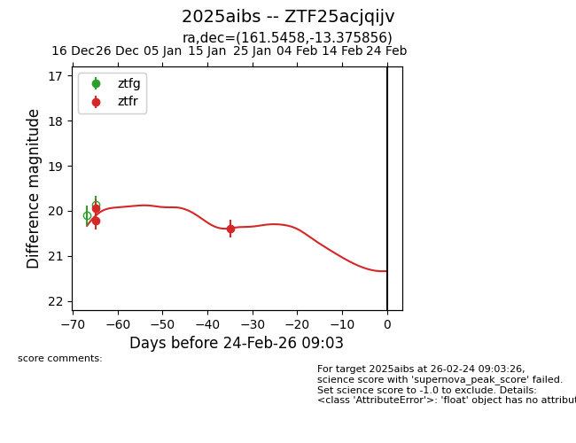
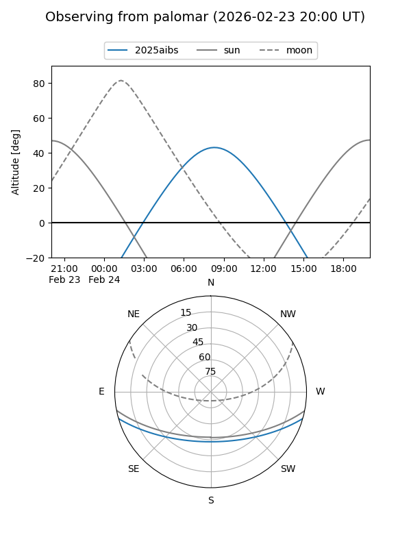
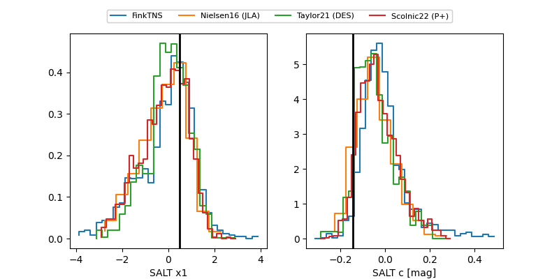

2025aibs
Target 2025aibs at 2026-01-09 12:49
Aliases and brokers:
FINK: link
Lasair: link
ALeRCE: link
TNS: link
YSE: link
alt names
ZTF25acjqijv (ztf,fink_ztf)
2025aibs (tns,yse)
Coordinates:
equatorial (ra, dec) = 161.5458,-13.37586
equatorial (HMS+DMS) = 10:46:10.98,-13:22:33.08
galactic (l, b) = (262.0889,+39.36330)
Flags:
Photometry:
last ztfr=20.22
2 ztfr detections
Lightcurve

Visibility


Additional plots
